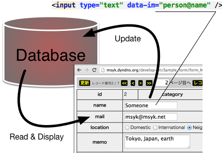
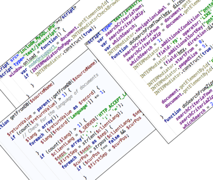

データベースとのやりとりは、手続き的なプログラミングをせずに、宣言的な記述だけで実現します
- HTMLのタグの属性にテーブル名やフィールド名を書き込むことで、テキストフィールドにデータベースのデータが表示されます。
- テキストフィールドに表示されたデータを修正すると、自動的にデータベースに更新できます。
- こうした処理をHTMLのフォーム要素で実現しています。その他の要素ではデータベースの値の表示や属性への適用が可能です。
- レコードを繰り返し表示したり、あるいは一定数ごとのレコードを表示するページネーションも指定を記述するだけ利用できます。
- レコードの追加や削除のボタンを自動的に表示させることができます。
- 画像データについても、データベースと連動して行えます
- 認証や認可の指定もプログラミングの必要はなく指定を記述することで実現できます。

複雑な処理やユーザの応答に細かく応える仕組みをプログラミングで組み込めます
- データベースから取り出したデータを処理したり、クライアントでのプログラム追加が可能なので、拡張性もあります。
- データベース処理を「フィールド単位」および「レコード単位」での拡張が可能であり、この仕組みを利用する事で、単なる2階層システムではなく、間に処理をかませることができます。
- JavaScriptで作られたコンポーネントを統合する仕組みも持っており、tinyMCEとの連動に加えて独自コンポーネントでのファイルのアップロードなどもできます。
- ブラウザーを認識して非対応ブラウザーにメッセージを表示する事や、対応範囲を定義することもできます。
INTER-Mediatorの概要(2019/8/24の勉強会でのプレゼン)
INTER-Mediatorのデモ
INTER-Mediatorの概要(FileMaker開発者向け)
稼働環境
サーバーサイドではPHPを使います。クライアントサイドではJavaScriptを利用します。HTML Living Standardに対応しているブラウザーであれば基本的には利用できるはずです。 Ver.6でInternet Explorerは対応ブラウザーではなくなりました。 Ver.12よりPHP 7.4以降（よりPHP 7.1以降）となり、 Ver.14よりPHP 8.1以降での動作となりました。
- PHP: INTER-Mediator Ver.14以降はPHP 8.1以降
- 対応データベース: MySQL（PDO）、MariaDB（PDO）、PostgreSQL（PDO）、SQLite3（PDO）、Microsoft SQL Server（PDO, PHP 7以降）、Claris FileMaker Server
- サポートされるWebブラウザー：Google Chrome、Safari、Microsoft Edge、Firefox、その他WebKitをベースにしたブラウザー
ダウンロード
INTER-Mediatorを入手する方法については「ダウンロードとインストール」のページを参照してください。試用・学習用のDockerコンテナ環境を入手する方法については「トライアル版の利用」のページを参照してください。INTER-MediatorのライセンスはMITライセンスです。